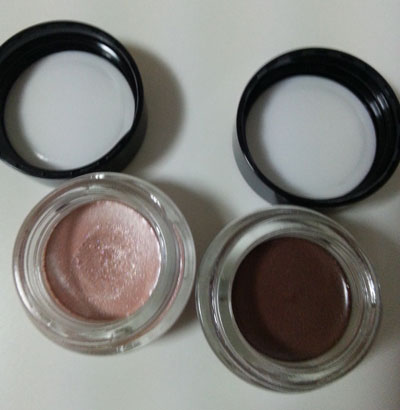
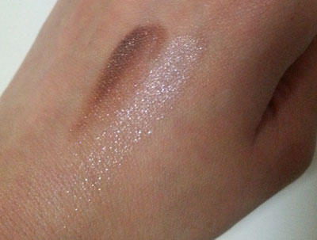
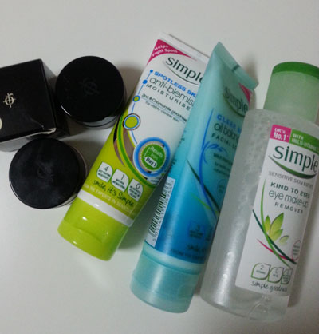
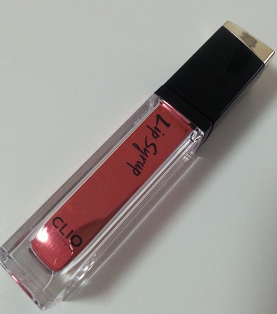
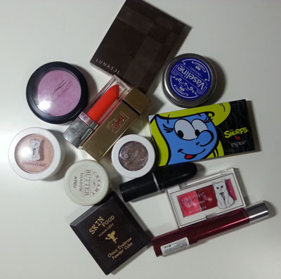
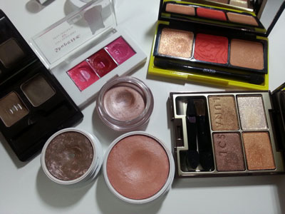
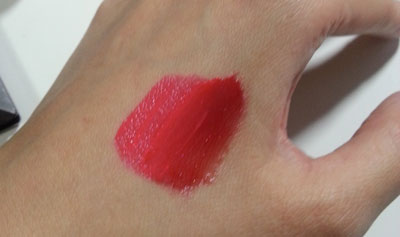
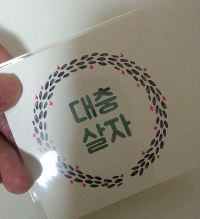

결국 ASOS 구매를 시작하였습니다^^;;
페이팔로 바로바로 결제되고 늠 편해요 ㅜㅜ
이나라는 회원가입부터 핸드폰이 없으면
가입조차 안되는 곳이 늠 많아서;;;;
플러스 가입했다 하더라고 결제까지
너무 거쳐야할 단계가 많더군요 ㅜㅜ ㅜㅜ
사람들의 충동구매를 막기위한 나라차원의 배려인가;;
라는 생각이 들 정도로

일라마스카 vintage metallix
Courtier / Embellish
처음에 Courtier를 구입하고 마음에 들어서
Embelish를 추가로 구매했습니다

의미없는 발색샷
(좌)Embellish / (우)Courtier 입니다
Courtier
손에 닿자마자 스르륵 녹고 펄 엄청 빤딱 거려요
처음엔 좀 놀랐음;;
눈에 바르면 색은 거의 티가 안나는데
무지하게 반딱반딱 거려서 ^^;;
베이스로 깔아주고 위에 색조 얹으면 저녁까지
눈이 반짝반짝 합니다 ^^

£20 이상부터 무료배송이라
가격맞추느라 구매한 심플 스킨케어 제품들
Courtier 구입할때는 클렌징만 하나 추가로 넣었는데
두번째 주문할때는 전체 20% off 진행중이라
수분크림 / 스크럽 / 아이리무버 이래 주문했네용
영국살때는 이제품만 열심히 사용했습니당
클렌징 / 아이리무버 / 수분크림 전부 괜찮아요
가볍고 무색무향의 가격도 저렴하고
부담없이 팍팍 쓸 제품 찾으시는분들 추천입니다 ^^***

그리고 자기전 인터넷을 떠돌다 우연히 발견한
클리오 립시럽 06네이키드 로즈
색이 너무 예뻐서 구매했는데
제입술에서는 티도 안나요.....OTL
립스틱은 차분한 색보다 쨍한색이 잘 어울리는거 같은데
아직도(?) 포기를 못하고 마음에 드는 색이 있으면 도전해 봅니다 ㅋㅋㅋ
걍 립스틱 위에 덧바르는 용도로 써야할듯 ㅜㅜ ㅜㅜ
이런 틴트 타입 그때그때 유행하는거
정말 깨알같이 사보고 매번 아 나랑 안맞는구나
순식간에 수분을 쭈악 빨아들이는 느낌이야;;;
라고 생각하면서 또 이쁜거 보이면 팔랑귀 팔락거리면서 집어옵니다;;
근데 이제껏 구매한 제품중 향이랑 쵹쵹함은 제일 좋네요
그러므로 쨍한 핑크 신드롬 색이 갖고싶습니다!! (←;;)

생각난김에 모아본 올해 최고 자주 사용한 제품들
스킨푸드 - 초코 아이브로우 2호
에스쁘아 스머페트 - 윈썸
루나솔 - 02 베이지 오렌지
슈에무라 - 크림 아이섀도우 앰버 브라운
어퓨 - 크리미 버터 섀도우 2호 빈티지 로즈
슈에무라 -슈페트 크림치크 오렌지
슈에무라 - 슈페트 립트리오 02
맥 - 풀오브 조이
입생 - 52 로지코랄
맥 - 임패션드
레브론 - 컬러버스트 래커밤 150 인타이싱
메이블린 - 만다린 드림
바셀린 립밤

에스쁘아 스머페트에서 윈썸은 올해 정말 잘 썼습니다
매번 눈화장 마무리로 위에 올려줬다능
맘에든 제품중에 슈에무라가 세개나 있는거 보니
이래저래 제 취향인가 봅니다
립제품도 다 좋아해요//
맥 풀오브조이는 단독으로 쓰기보다
핑크나 살구색 블러셔후 전체적으로 위에 한번 쓸어주곤 했는데
이게 그래서 효과가 있느냐!! 그건 모르겠습니다;;;
입생 - 52 로지코랄
레브론 - 컬러버스트 래커밤 150 인타이싱
메이블린 - 만다린 드림
요 세조합 색이 오묘한게 마음에 들어 자주 바르고 다녔어요

손등에 바랄보니 전혀 다른 결과가 나왔는데 ㅡㅡ;;
우선 로지코랄을 바르고 입술 안쪽에만 인타이싱 그라데이션 넣어준다음
만다린 드림을 위에 살짝만 바르면
색이 정말 요상모호해서(.....;;) 좋아라 합니다 ^^;;;;
쓰다보니 셰이딩이나 BB등은 전혀 안들어가 있다는걸 꺠달았지만
여기서 마치도록 하겠습니다!!
*선크림과 CC크림은 일본여행에서 사온
비오레 UV 아쿠아 리치 / 림멜 CC 크림 airy finish 가 최고에요
재구매 의사있습니다 ;ㅂ;

홍대 드로잉 모임가서 발견한 스티커
넘 맘에들어!! ㅋㅋㅋ
@스튜디오달고나 님 작품입니다 :)
끗!